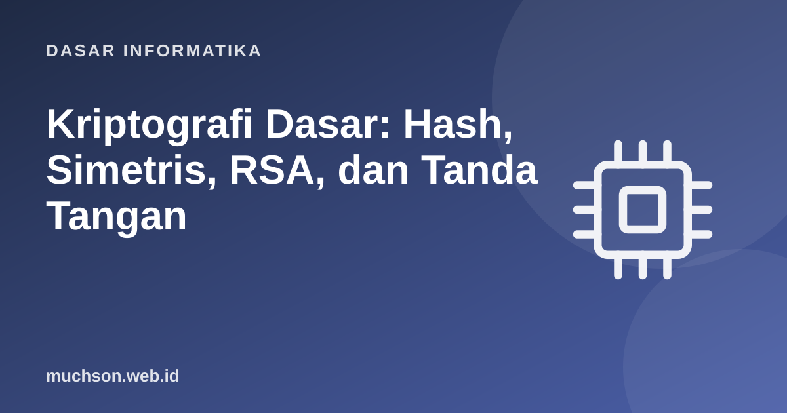

Beranda › Artikel › Dasar Informatika
Dasar InformatikaKriptografi Dasar: Hash, Simetris, RSA, dan Tanda Tangan
Setiap kali Anda melihat gembok di browser, masuk ke perbankan, atau mengirim pesan terenkripsi, kriptografi bekerja. Materi ini membangun intuisi dengan contoh kecil yang dapat dihitung: dari cipher klasik yang mudah patah sampai ide jenius kunci publik. Perhatian: contoh di sini untuk belajar dan tidak aman untuk dipakai nyata.
Sebaiknya sudah paham: sistem bilangan, aritmetika modular (dasar)

Setelah membaca dan mencoba materi ini, Anda mampu:
- menjelaskan tujuan kriptografi: kerahasiaan, integritas, autentikasi, nirsangkal
- menjelaskan mengapa cipher klasik (Caesar, substitusi) mudah dipecahkan
- memakai fungsi hash dan menjelaskan sifat-sifatnya
- membedakan enkripsi simetris dan asimetris dan peran masing-masing
- menjelaskan RSA, Diffie–Hellman, dan tanda tangan digital pada skala kecil
Peringatan penting: jangan membuat kriptografi sendiri untuk produksi. Kode di artikel ini sengaja disederhanakan untuk pemahaman dan memakai angka kecil. Gunakan pustaka yang teruji (misalnya libsodium, cryptography.io, atau pustaka TLS dari platform), dengan algoritma dan parameter yang direkomendasikan.
Tujuan kriptografi
| Tujuan | Arti | Alat utama |
|---|---|---|
| Kerahasiaan | Hanya penerima sah yang dapat membaca | Enkripsi |
| Integritas | Data tidak berubah tanpa terdeteksi | Hash, MAC |
| Autentikasi | Memastikan identitas pengirim | MAC, tanda tangan digital, sertifikat |
| Nirsangkal | Pengirim tidak dapat menyangkal telah mengirim | Tanda tangan digital |
Cipher klasik dan mengapa patah
import collections, string
def caesar(teks, geser):
hasil = []
for ch in teks:
if ch.isalpha():
dasar = ord("A") if ch.isupper() else ord("a")
hasil.append(chr((ord(ch) - dasar + geser) % 26 + dasar))
else:
hasil.append(ch)
return "".join(hasil)
pesan = "Serangan dimulai saat fajar di gerbang barat"
sandi = caesar(pesan, 7)
print("sandi :", sandi)
print("dekripsi :", caesar(sandi, -7))
# memecahkan dengan brute force: hanya 25 kemungkinan kunci
print("\npercobaan semua kunci:")
for k in range(1, 26):
kandidat = caesar(sandi, -k)
if "dimulai" in kandidat:
print(f" kunci {k}: {kandidat} <- terbaca, kunci ditemukan")
# analisis frekuensi untuk substitusi umum: huruf paling sering di teks Indonesia biasanya A, N, I, E
teks = "aku pergi ke pasar untuk membeli beras minyak dan garam karena persediaan di rumah sudah habis"
frek = collections.Counter(c for c in teks if c.isalpha())
print("\nhuruf paling sering:", frek.most_common(4))sandi : Zlyhunhu kptbshp zhha mhqhy kp nlyihun ihyha
dekripsi : Serangan dimulai saat fajar di gerbang barat
percobaan semua kunci:
kunci 7: Serangan dimulai saat fajar di gerbang barat <- terbaca, kunci ditemukan
huruf paling sering: [('a', 15), ('e', 8), ('r', 7), ('i', 6)]
Fungsi hash
Fungsi hash memetakan masukan berukuran apa pun menjadi keluaran berukuran tetap ("sidik jari"). Sifat yang diinginkan: deterministik, cepat dihitung, satu arah (sulit mencari masukan dari keluaran), tahan tabrakan (sulit menemukan dua masukan berbeda dengan hash sama), dan efek avalanche (perubahan kecil pada masukan mengubah keluaran secara drastis).
import hashlib
def sha256(teks): return hashlib.sha256(teks.encode()).hexdigest()
a = "Transfer Rp1.000.000 ke Budi"
b = "Transfer Rp1.000.001 ke Budi" # beda satu angka
print(sha256(a)); print(sha256(b))
# efek avalanche: berapa bit hash yang berubah?
x, y = int(sha256(a), 16), int(sha256(b), 16)
beda = bin(x ^ y).count("1")
print(f"\nbit yang berbeda: {beda} dari 256 ({beda/256*100:.0f}%) - sekitar separuh, hasil acak")
# verifikasi integritas berkas: bandingkan hash sebelum dan sesudah
dokumen = b"Isi dokumen penting versi 1"
hash_asli = hashlib.sha256(dokumen).hexdigest()
diterima = b"Isi dokumen penting versi 2"
print("integritas terjaga?", hashlib.sha256(diterima).hexdigest() == hash_asli)
# panjang keluaran tetap
for teks in ("a", "a" * 100000):
print(len(sha256(teks)), "karakter heksa (256 bit)")491e10f6a29d9275109cf0812c7a95f71ebcf28e927e1b71309bb76759743ced
4f28ef05642c881acaaf16fcf2536b654f6aca031e1702259bb6c371b5574dcd
bit yang berbeda: 133 dari 256 (52%) - sekitar separuh, hasil acak
integritas terjaga? False
64 karakter heksa (256 bit)
64 karakter heksa (256 bit)
MD5 dan SHA-1 sudah tidak aman untuk keperluan keamanan karena tabrakan dapat dibuat. Gunakan keluarga SHA-2 (SHA-256) atau SHA-3. Untuk kata sandi, pakai fungsi lambat khusus (Argon2, scrypt, bcrypt), bukan SHA-256 polos.
Enkripsi simetris: satu kunci
Pengirim dan penerima berbagi kunci rahasia yang sama. Cepat dan efisien untuk data besar. Standar modern: AES (kunci 128/256 bit) dengan mode operasi seperti GCM yang juga menjamin integritas. Masalah utama: bagaimana kedua pihak berbagi kunci dengan aman sejak awal?
# One-Time Pad: XOR dengan kunci acak sepanjang pesan dan dipakai SEKALI.
# Satu-satunya cipher yang terbukti aman secara teori (Shannon), tetapi tidak praktis: kunci sepanjang pesan.
import secrets
pesan = "Rapat jam 9".encode()
kunci = secrets.token_bytes(len(pesan))
sandi = bytes(p ^ k for p, k in zip(pesan, kunci))
print("sandi (heksa):", sandi.hex())
print("dekripsi :", bytes(s ^ k for s, k in zip(sandi, kunci)).decode())
# bahaya memakai ulang kunci: XOR dua sandi membocorkan XOR dua pesan
pesan2 = "Rapat jam 7".encode()
sandi2 = bytes(p ^ k for p, k in zip(pesan2, kunci))
bocor = bytes(a ^ b for a, b in zip(sandi, sandi2))
print("XOR dua sandi = XOR dua pesan:", bocor == bytes(a ^ b for a, b in zip(pesan, pesan2)))sandi (heksa): ab80867b8ae9fe371d198a
dekripsi : Rapat jam 9
XOR dua sandi = XOR dua pesan: True
Enkripsi asimetris: sepasang kunci
Setiap orang memiliki kunci publik (boleh disebarkan) dan kunci privat (dirahasiakan). Yang dikunci dengan kunci publik hanya dapat dibuka dengan kunci privat pasangannya. Ini menyelesaikan masalah distribusi kunci, dengan harga komputasi yang lebih lambat sehingga biasanya dipakai untuk menyepakati kunci simetris atau menandatangani.
RSA skala kecil
RSA bersandar pada kesulitan memfaktorkan hasil kali dua bilangan prima besar. Berikut contoh dengan angka kecil agar dapat dihitung tangan (kunci nyata berukuran 2048 bit atau lebih).
from math import gcd
p, q = 61, 53
n = p * q # 3233 : bagian dari kedua kunci
phi = (p - 1) * (q - 1) # 3120
e = 17 # eksponen publik (koprima dengan phi)
assert gcd(e, phi) == 1
d = pow(e, -1, phi) # eksponen privat: invers e modulo phi
print(f"kunci publik (n={n}, e={e}); kunci privat d={d}")
pesan = 65 # pesan berupa angka < n
sandi = pow(pesan, e, n) # enkripsi: pesan^e mod n
print("pesan", pesan, "-> sandi", sandi)
print("dekripsi:", pow(sandi, d, n))
# tanda tangan digital: "enkripsi" hash dengan kunci PRIVAT, siapa pun memverifikasi dengan kunci PUBLIK
hash_pesan = 123 # anggap ini hash pesan (diperkecil agar < n)
tanda_tangan = pow(hash_pesan, d, n)
print("tanda tangan:", tanda_tangan, "| verifikasi (dengan kunci publik):", pow(tanda_tangan, e, n) == hash_pesan)
print("pesan dipalsukan, hash 124 :", pow(tanda_tangan, e, n) == 124)
# mengapa aman: penyerang hanya tahu n=3233, bukan p dan q. Faktorisasi n kecil itu mudah:
for k in range(2, 100):
if n % k == 0: print("n difaktorkan:", k, "x", n // k, "-> kunci privat dapat dihitung; itu sebabnya n harus raksasa"); breakkunci publik (n=3233, e=17); kunci privat d=2753
pesan 65 -> sandi 2790
dekripsi: 65
tanda tangan: 2746 | verifikasi (dengan kunci publik): True
pesan dipalsukan, hash 124 : False
n difaktorkan: 53 x 61 -> kunci privat dapat dihitung; itu sebabnya n harus raksasa
Pertukaran kunci Diffie–Hellman
Dua pihak menyepakati kunci rahasia bersama lewat saluran terbuka. Penyadap yang melihat semua pesan tetap tak dapat menghitung kuncinya, karena bergantung pada kesulitan logaritma diskret.
# parameter publik (kecil, untuk belajar)
p, g = 23, 5
a = 6 # rahasia Ani (tidak dikirim)
b = 15 # rahasia Budi (tidak dikirim)
A = pow(g, a, p) # Ani mengirim A = g^a mod p
B = pow(g, b, p) # Budi mengirim B = g^b mod p
print("terlihat penyadap: p =", p, "g =", g, "A =", A, "B =", B)
kunci_ani = pow(B, a, p) # (g^b)^a mod p
kunci_budi = pow(A, b, p) # (g^a)^b mod p
print("kunci Ani:", kunci_ani, "| kunci Budi:", kunci_budi, "| sama:", kunci_ani == kunci_budi)
# penyadap harus mencari a dari A: untuk p kecil mudah, untuk p 2048 bit tidak mungkin
print("penyadap mencoba semua a:", [x for x in range(1, p) if pow(g, x, p) == A])terlihat penyadap: p = 23 g = 5 A = 8 B = 19
kunci Ani: 2 | kunci Budi: 2 | sama: True
penyadap mencoba semua a: [6]
Menyatukan: apa yang terjadi di HTTPS
1. Mengapa pesan besar tidak dienkripsi langsung dengan RSA?
2. Apa bedanya hash dan enkripsi?
3. Mengapa kata sandi disimpan sebagai hash bergaram?
4. Apa itu serangan man-in-the-middle terhadap Diffie–Hellman polos?
- Kriptografi menjamin kerahasiaan, integritas, autentikasi, dan nirsangkal.
- Cipher klasik patah oleh brute force dan analisis frekuensi.
- Hash: sidik jari satu arah dengan efek avalanche; pakai SHA-2/3, bukan MD5/SHA-1.
- Simetris cepat tetapi berbagi kunci sulit; asimetris menyelesaikan distribusi kunci.
- RSA, Diffie–Hellman, dan tanda tangan digital membentuk dasar HTTPS. Jangan membuat kriptografi sendiri.
Tanya jawab
Apa itu kriptografi kurva eliptik (ECC)?
Apakah enkripsi ujung-ke-ujung aman sepenuhnya?
Apa itu kriptografi pasca-kuantum?
Referensi
- Jonathan Katz dan Yehuda Lindell, Introduction to Modern Cryptography (CRC Press)
- Dokumentasi Python: hashlib
- NIST: Post-Quantum Cryptography
- Rivest, Shamir, Adleman, A Method for Obtaining Digital Signatures and Public-Key Cryptosystems, CACM 21(2), 1978